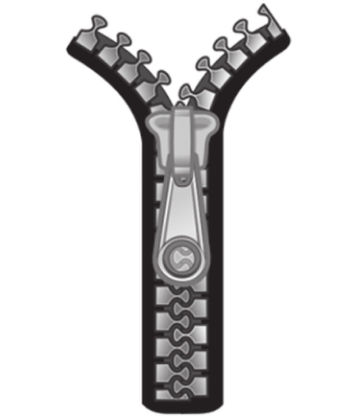
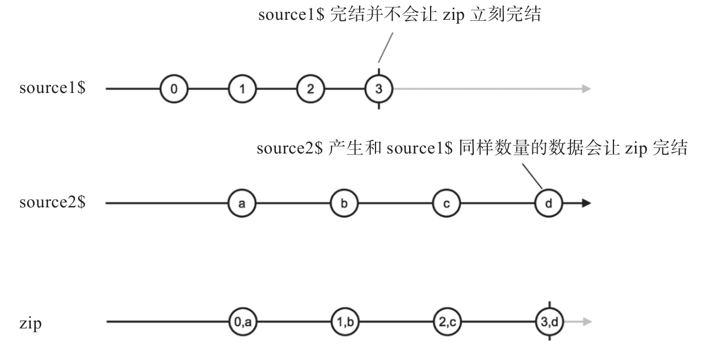

zip在这里的含义就是“拉链”，这个操作符的名字非常直观，相信读者一定用过拉链，拉链主要由拉片和两条有链齿的布带组成，当我们想要闭合拉链的时候，拉动拉片，两边的链齿被牵动，一对一咬合，拉链的一对链齿就合并上了，如图5-4所示。

图5-4 zip的工作方式就像是拉链
如果链齿错位，通过拉片的时候一边进了一个，另一边进了两个，那这个拉链肯定坏了。所以，拉链合并两条链齿的关键，就是链齿必须一一对应，这也是zip这个操作符的工作方式。zip就像是一个拉条，上游的Observable对象就像是拉链的链齿，通过拉条合并，数据一定是一一对应的。
1.一对一的合并
和concat、merge一样，zip既有静态形式也有实例形式，功能完全相同，只是导入方式和用法不同而已，下面是静态操作符形式的zip示例代码：
import {Observable} from 'rxjs/Observable';
import 'rxjs/add/observable/of';
import 'rxjs/add/observable/zip';
const source1$ = Observable.of(1, 2, 3);
const source2$ = Observable.of('a', 'b', 'c');
const zipped$ = Observable.zip(source1$, source2$);
zipped$.subscribe(
console.log,
null,
() => console.log('complete')
);
代码运行输出如下：
[ 1, 'a' ] [ 2, 'b' ] [ 3, 'c' ] complete
可以看到，在产生的数据形式上，zip又和concat、merge很不同，concat、merge会保留原有的数据传给下游，但是zip会把上游的数据转化为数组形式，每一个上游Observable贡献的数据会在对应数组中占一席之地。
当zip执行的时候，它会立刻订阅所有的上游Observable，然后开始合并数据，在上面的例子中，source1$产生的数据序列会和source2$产生的数据序列配对，1配上a，2配上b，3配上c，所以产生3个数组传递给下游。
不过上面的例子中，source1$和source2$产生的是同步数据流，而且数据个数相同，那对于异步数据流情况如何？如果source1$和source2$的完结时间不同又会如何？我们修改上面代码中source1$和source2$的定义来看一下表现，代码如下：
const source1$ = Observable.interval(1000);
const source2$ = Observable.of('a', 'b', 'c');
这样修改之后，source1$每隔1秒钟吐出一个从0开始的递增整数序列，source2$则是同步产生三个字符串，最后程序的运行结果如下，但是前三行的输出都有1秒钟的间隔：
[ 0, 'a' ] [ 1, 'b' ] [ 2, 'c' ] complete
之所以输出出现时间间隔，是因为zip要像拉链一样做到一对一咬合。虽然source2$第一时间就吐出了字符串a，但是source1$并没有吐出任何数据，所以字符串a只能等着，直到1秒钟的时候，source1$吐出了0时zip就把两个数据合并为一个数据传给下游。这时候source2$的第二个数据字符串b已经跃跃欲试，但是还是不该它上场，因为source1$并不会立刻吐出数据，又要等待1秒钟，才有数据1吐出来，这时候字符串才能找到配对的对象。如此这般，字符串c也要再等1秒钟才能被配对。
另外请注意，source1$是由interval产生的数据流，是不会完结的，但是zip产生的Observable对象却在source2$吐完所有数据之后也调用了complete，也就是说，只要任何一个上游的Observable完结。zip只要给这个完结的Observable对象吐出的所有数据找到配对的数据，那么zip就会给下游一个complete信号。图5-5展示了zip的弹珠图，可以更清楚地展示这个功能。

图5-5 zip的弹珠图
弹珠图的示例中，source1$吐出数据节奏更快，而且更早完结，但是当它完结的时候，source2$才总共吐出两个数据，zip按照source2$的节奏产生了[0，a]和[1，b]两个数组，但是source1$还有2、3两个数据没有配对。这时候，zip知道自己产生的Observable可以完结了，但是不是现在，它要等到source2$再吐出两个数据和source1$吐出的2和3配对之后才能收工，所以，直到产生了[2，c]和[3，d]两个数据之后，zip产生的Observable才完结。
在这个示例中，似乎source2$在产生d之后会持续产生数据，实际上，zip在完结的时候，会退订所有的上游数据，所以source2$的生命也会被终结。
2.数据积压问题
从上面的弹珠图示例中可以发现一个问题，如果某个上游source1$吐出数据的速度很快，而另一个上游source2$吐出数据的速度很慢，那zip就不得不先存储source1$吐出的数据，因为RxJS的工作方式是“推”，Observable把数据推给下游之后自己就没有责任保存数据了。被source1$推送了数据之后，zip就有责任保存这些数据，等着和source2$未来吐出的数据配对。假如source2$迟迟不吐出数据，那么zip就会一直保存source1$没有配对的数据，然而这时候source1$可能会持续地产生数据，最后zip积压的数据就会越来越多，占用的内存也就越来越多。
对于数据量比较小的Observable对象，这样的数据积压还可以忍受，但是对于超大量的数据流，使用zip就不得不考虑潜在的内存压力问题，zip这个操作符自身是解决不了这个问题的，在后续的章节中我们会介绍如何处理这种情况。
3.zip多个数据流
在上面的介绍中，我们都是以zip有两个上游数据为例子讲解，这是因为拉链只有两条链齿，对应两个Observable对象比较直观。实际上，就像concat、merge一样，zip也可以支持多个上游Observable对象，只不过现实中并没有超过两条链齿的拉链存在，如果你能够理解拉链，再想象一下三条链齿依然要做到一对一对一的咬合，就不难理解如何用zip来组合两个以上的数据流。
如果用zip组合超过两个Observable对象，游戏规则依然一样，组合而成的Observable吐出的每个数据依然是数组，数组元素个数和上游Observable对象数量相同，每个上游Observable对象都要贡献一个元素，如果某个Observable对象没有及时吐出数据，那么zip会等，等到它吐出匹配的数据，或者等到它完结。
很明显，吐出数据最少的上游Observable决定了zip产生的数据个数。例如有三个上游分别为source1$、source2$、source3$，source1$吐出3个数据后完结，source2$吐出4个数据后完结，source3$永不完结，那么通过zip合并三者产生的Observable对象也就只产生3个数据。假如source2$在时间上要比source1$早完结，这种情况下zip会等待source1$吐出数据，但是最终source1$没有产生数据而是完结，那么只不过zip白等了而已，最后就丢弃source2$产生的最后一个数据。